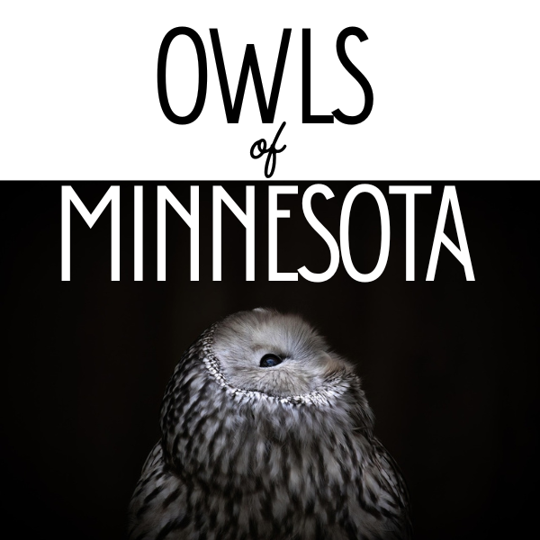

Nestled amidst the breathtaking landscapes and dense forests of Minnesota, a mysterious and captivating creature reigns supreme—the owl. With their distinctive hooting calls and remarkable nocturnal abilities, owls have long fascinated both wildlife enthusiasts and casual observers alike.
Minnesota, known as the Land of 10,000 Lakes, provides a haven for various owl species, each with its own unique characteristics and adaptations.
In this article, we embark on a journey to unravel the secrets of owls in Minnesota, shedding light on their habits, habitats, and diets.
We explore the diverse owl species that call this region home, including the majestic Great Horned Owl, the stealthy Barred Owl, and the enigmatic Snowy Owl. From their exceptional hunting skills to their intricate nesting behaviours, we delve into the fascinating lives of these avian predators.
Furthermore, we examine the conservation efforts aimed at protecting Minnesota’s owl populations, as these iconic birds face challenges such as habitat loss and climate change. Join us as we unravel the mysteries and delve into the captivating world of owls, showcasing the silent wings that grace the North Woods of Minnesota.